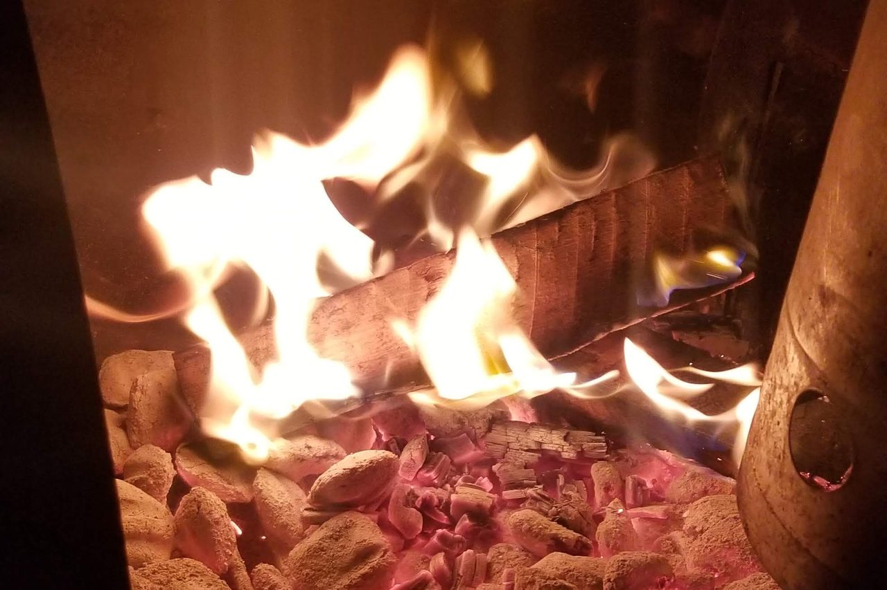

Cost of Fuel
Food Investigation · Road to Kisumu
The power had been out for days when I realized I wasn't really planning dinner anymore. I was managing it. The freezer had started to thaw, so we cooked what was in it and shared some with the neighbors. Food that normally would have lasted for weeks suddenly had to be eaten before it spoiled. Another outage was different. I had planned a full course meal. Then the power went out so that meal turned into hamburgers and hot dogs out on the grill. Not because I couldn't cook the meal I had planned, but because of what fuel I could burn.
That stuck with me. I've cooked on charcoal grills, butane cooktops and propane griddles during outages and while camping, or when I just wanted to get outside and cook. You learn pretty quickly that fuel isn't just what's underneath the food. Fuel often decides what food is possible. In the world of BBQ fuel is an ingredient. Charcoal is not something I just bought to cook with, it adds flavor, just like the choice of wood is also a flavor choice, not just something I thoughtlessly threw into the smoker. Gas was always just a utility bill though.
I went looking at what cooking fuel costs in Kenya, because I'm planning a bar and grill in Kisumu, and suddenly the thing underneath the food became a serious part of the food. The American version is quieter. My last two PG&E bills were $194 and $179, but those cover the whole house, and I'm not going to turn a utility bill into a cooking statistic. Charcoal is where I can actually see it. It's where I've always seen it. I've watched the Kingsford bags get smaller over the years. The two-bag packs I remember buying were 20 pounds per bag. The ones I'm buying now are 16 pounds per bag. Twenty-pound twin packs still exist; they're just not what's on the shelf where I shop, and the reduction has been reported, so it isn't only my memory. A 16-pound bag runs about $10.92 at Walmart right now and the two-pack sits just under $20, though charcoal pricing swings by seller, location and whatever weekend it is. My recollection is that the two-bag pack was around $20 before the change too, but I don't have the old receipt.
Forty pounds became thirty-two. That's 20 percent less charcoal, and I didn't experience that as a price increase. I experienced it as the smaller bag sitting on the same shelf for roughly the same money. Wood has gotten more expensive too. When I'm doing a big cut of meat on a holiday, I can burn roughly a bag of charcoal and another $20 or so in wood, I remember that same amount of wood used to run around $14.
I've spent years thinking about food costs in terms of meat, vegetables, spices, oil, packaging and labor, but I didn't put fuel as gas on the list. I should have, because in Kenya, the numbers are hard to ignore. In June 2026, the national average retail price of charcoal was 96.79 ksh per kilogram, according to the Kenya National Bureau of Statistics. Business Daily calls that a 78-month high, the highest national average since January 2020, when charcoal averaged 152.25 ksh per kilogram. In August 2025 the same national average stood at 89.83 ksh per kilogram.
Those thirty-two pounds in my garage are a little under fifteen kilograms. At the June average of 96.79 ksh, that same weight works out to about 1,405 ksh. It's a useful comparison and not a purchasing price. The Kenya National Bureau of Statistics is measuring retail by the kilogram, and anyone buying by the sack is paying something else.
A 13-kilogram liquefied petroleum gas refill averaged 3,470.82 ksh in June, the top of an eighteen-month climb. Kerosene in Nairobi sits at a record 191.38 ksh per litre, and it didn't get there for any reason having to do with cooking. Regulators raised it mid-cycle to bring it closer to diesel, after warnings that the gap between the two had grown wide enough to tempt dealers into cutting one with the other. Nobody worried about adulterated diesel was thinking about dinner. Dinner is where the price landed anyway.
The obvious answer when gas gets expensive is charcoal. Except charcoal is expensive too. That's the part that changed the way I was looking at this. This isn't simply a story about people switching from one fuel to another because one becomes too expensive.
What happens when the fuel you're switching from and the fuel you're switching to are both getting more expensive? You adjust the meal. You may cook it for less time. You might even make less of it, or you choose something faster. You stop making the thing that takes hours over a fire. You make the dish fit the fuel instead of making the fuel fit the dish.
There is another distinction worth making. Charcoal can remain the fallback even when it isn't actually cheaper because it can be bought in smaller quantities. A household that can't afford the upfront cost of refilling a liquefied petroleum gas cylinder may still be able to find enough cash for a smaller amount of charcoal. So “cheaper” isn't always the right word. Sometimes the difference is simply how much money you have to spend at one time.
That's a food story, because eventually somebody has to decide what gets cooked, and now I'm going to have to make that decision in Kisumu. The menu I'm building isn't based on charcoal as some emergency backup to gas. Charcoal is part of the food. Choma, smoked meats, fire kissed vegetables. That smoke isn't decoration. It's flavor.
I'm going to need a lot of charcoal. I can't tell you how much, because I haven't run a grill at that volume in that city yet, and I'm not going to guess at a daily number I'd then have to defend. What I can tell you is that I'll be buying at a scale no household buys at, out of the same market a household buys from. That bothers me. Not because I think I deserve cheaper charcoal, but because I'll be pulling from the same supply.
Here's the part I have to admit, I don't yet know where my charcoal will come from. I don't know where it's cut. I don't know who cuts it. I don't know how far it travels before it reaches the seller. I don't know how much of the final price is production, transportation, middlemen, scarcity or demand. I'm not willing to make up those answers just because they'd make a better article.
I'm not sure the answers will be easy to follow. Kenya's charcoal rules aren't a prohibition, they're a licensing regime. Commercial production and movement run on licences and permits, and traders are required to keep records of where their charcoal came from. The law asks for exactly the thing I'm looking for. Whether that paperwork actually follows the charcoal back to the tree is the part I don't know yet, and it's the part I'd have to find out before I could put a claim about sourcing on a menu.
The policy history doesn't simplify it either. Kenya imposed a logging moratorium in 2018 covering public and community forests, and it stopped charcoal production in those forests too. It has since been partially lifted, through a run of announcements and court rulings I can't summarize honestly in a sentence. So I'm not going to make the lazy argument that today's charcoal price is simply the result of a logging ban. The history is more complicated than that.
There is demand. There are producers, sellers and transporters. There are households that need fuel today. There are restaurants like the one I'm planning that will need considerably more of it. There is a supply chain underneath every fire, and I haven't learned mine yet. That's the uncomfortable part. I knew charcoal was an ingredient in the food I wanted to cook, but I didn't know charcoal had a price story.
I didn't realize how much it had climbed. I know I'm moving to Kisumu to cook. I know what I want the food to taste like. I know I want smoke. I know I want fire. What I hadn't done was ask what the fire would cost. That's a sourcing failure. Mine, and I'm glad I found it before I opened the kitchen.
The question I need to answer now isn't simply how much charcoal costs. It's where mine comes from. Until I can answer that, I don't actually know the full cost of the food I'm planning to sell.
— Chef Dumela